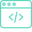

Hello, my name is Daniel Nieto.
In 2019, thanks to my first visit to France, I discovered that I had a great interest in computing. At that moment, I decided to focus my studies on learning french and programming basics to achieve the goal of studying in Paris. After two years, I returned to take the admission exam for school 42 and two months later I officially started my career as a software developer at the Paris Campus.
Interest
From the moment I decided to start studying the bases of programming autonomously, I discovered my passion for the development of web pages and the design of algorithms for solve problems efficiently. Currently, after the start of my study in Paris, I am very interested in learning about how the security in the cloud and how we can solve the actual problems like loss of information, filtering of passwords and system vulnerabilities.
Projects
Responsive Web Projects
- CSS Grid
- CSS Flexbox
- Media queries
All these projects were made based on the challenges proposed by FrontEnd Challenge for developers to practice their ability to reproduce a certain design.

Javascript Projects
- Async/Await
- Inject information from API
- JS Modules
These projects were made and inspired based in the tutorial "How to make a Weather App" and "Games in Javascript" by FreeCodeCamp
Ecole 42 Projects
- Data structures
- Memory management (no leaks)
- File management
- Operating system management
These are the first projects of the "Ecole 42" cursus that I have validated. You can click on the project name to obtain the code and its description.


Contact
You can contact me via email: alejandro2600nieto@gmail.com